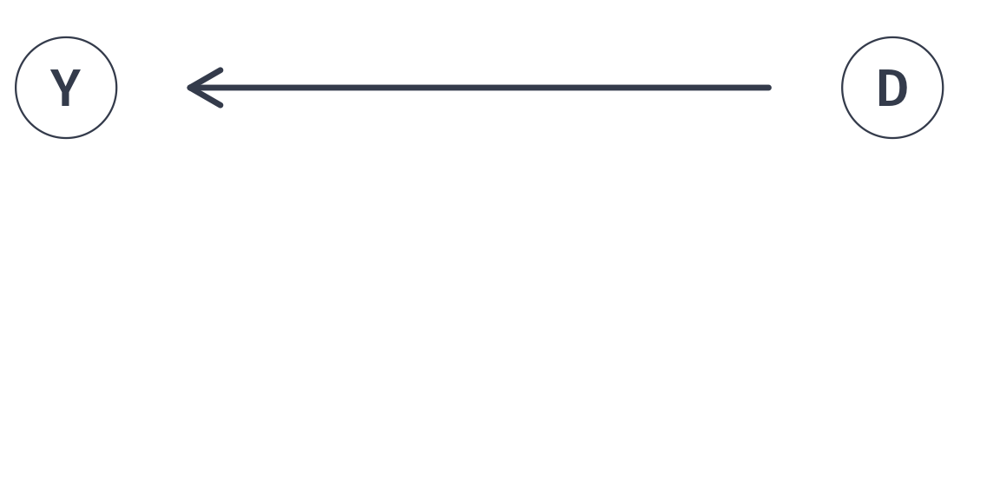
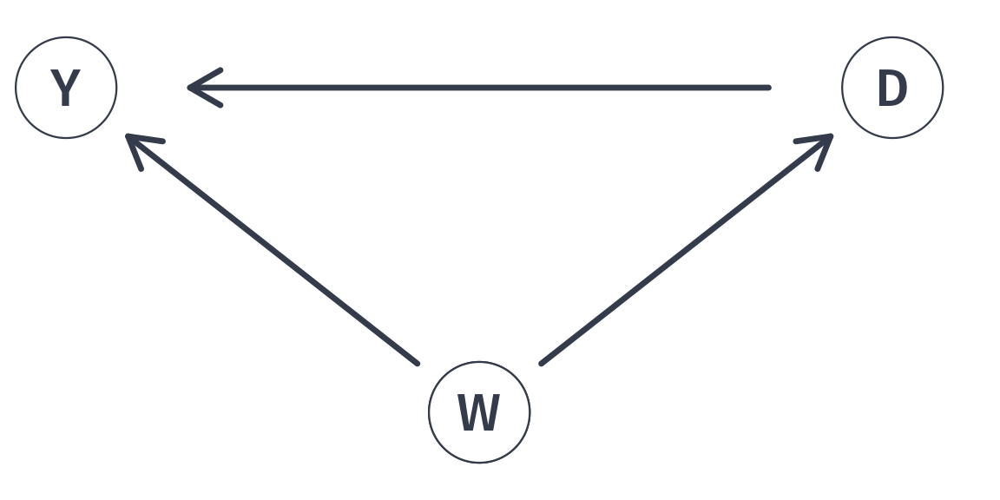
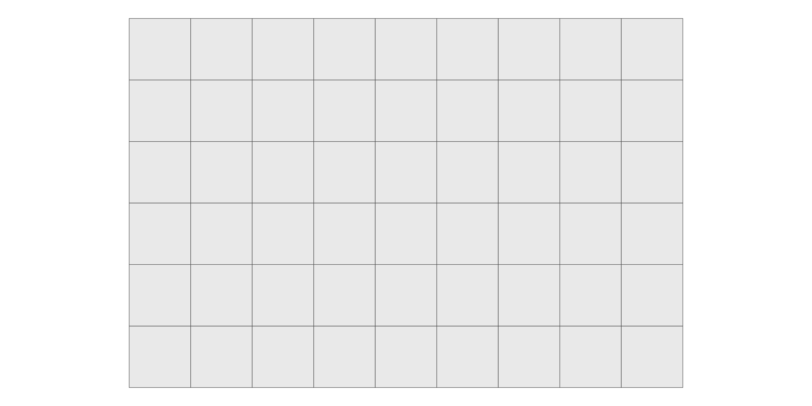
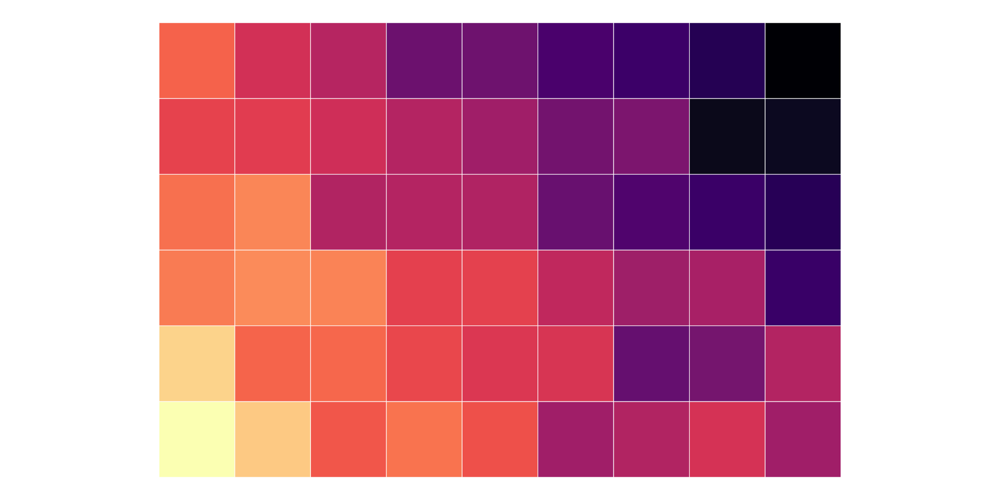
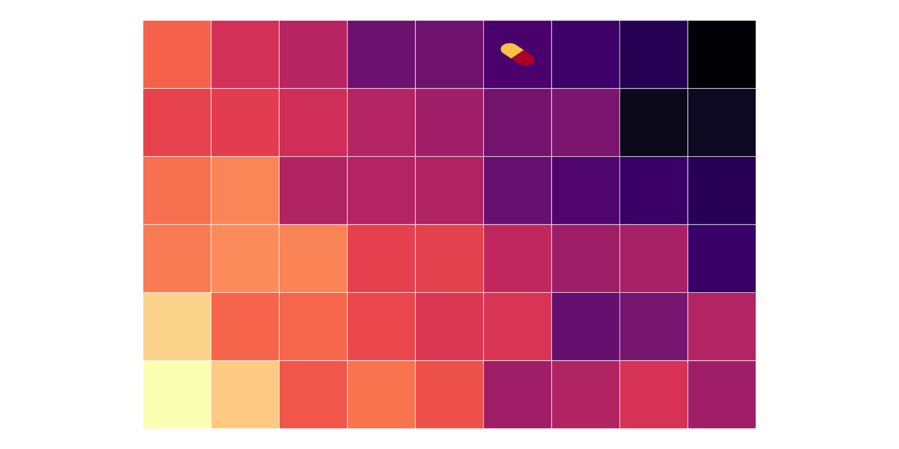
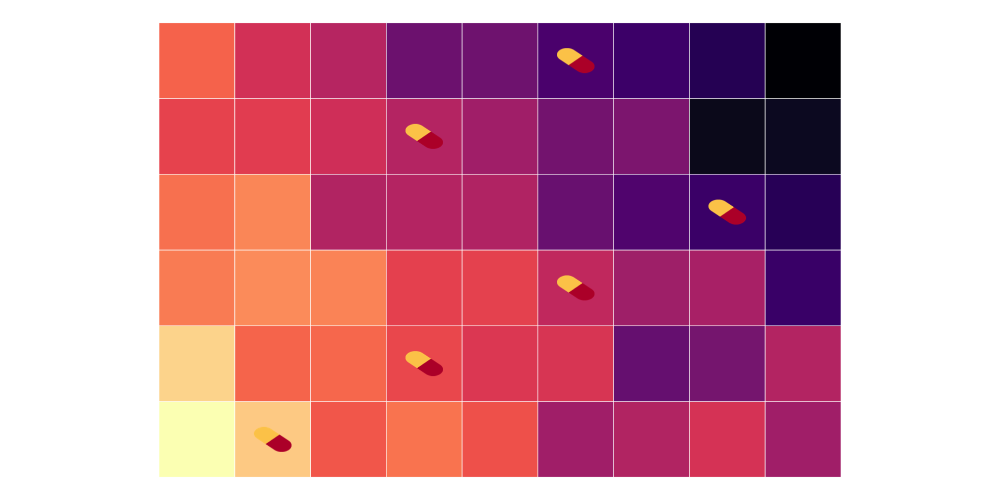
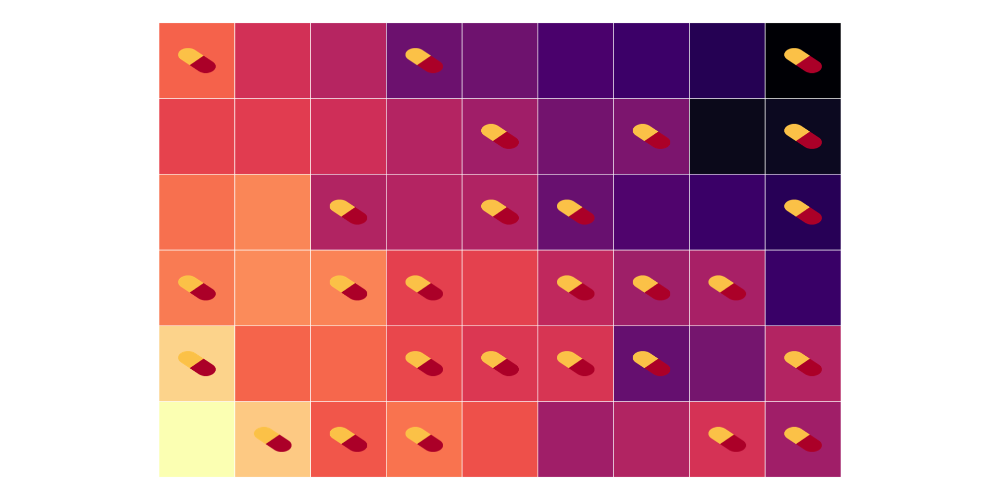
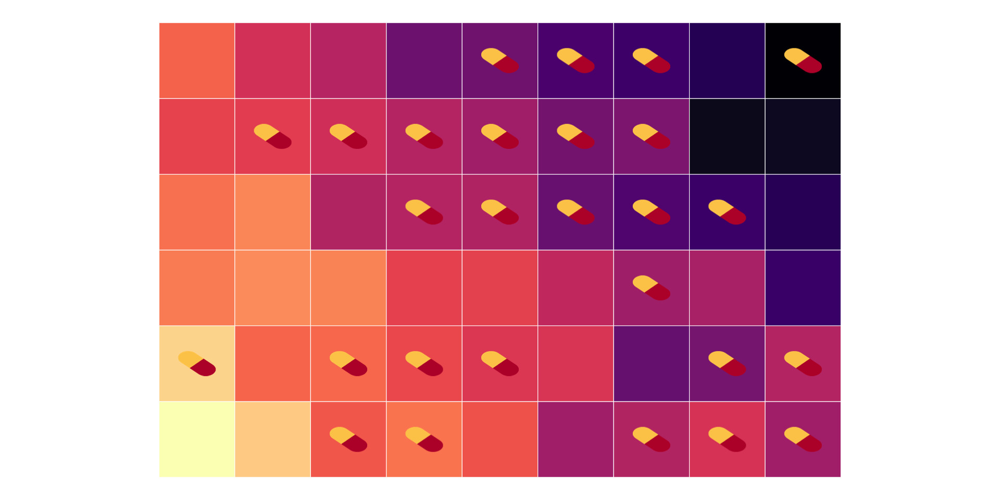
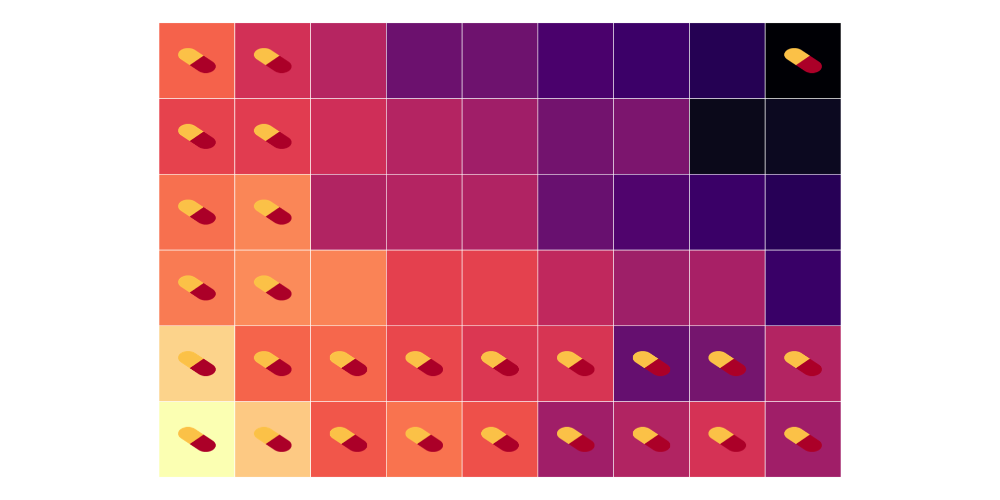

EC 320, Set 03
Spring 2023
PS02:
LA02:
Policy: In 2017, the University of Oregon started requiring first-year students to live on campus.
Rationale: First-year students who live on campus fare better:
Do these comparisons suggest the policy improves student outcomes?
Do they describe the effect of living on campus?
Do they describe something else?
The UO’s interpretation of those comparisons warrants skepticism.
The difference in outcomes between those on and off campus is not an all else equal comparison.
Upshot: Can’t attribute the difference in outcomes solely to living on campus.
Living on campus (D) increases student welfare (Y)

Living on campus (D) increases student welfare (Y)
But parental income (W) impacts both student welfare (Y) and living on campus (D). Failing to account for parental income will bias comparisons
Ceteris paribus, all else held constant, etc.
When all else equal, statistical comparisons detect causal relationships.
(Micro)economics has developed a comparative advantage in understanding where all else equal comparisons can and cannot be made.
Identify the effect of a treatment, \(D_i\), on individual \(i\)’s outcome, \(Y_{D,i}\).
Ideally, we could calculate the treatment effect for each individual \(i\) as
\[Y_{1,i} - Y_{0,i}\]
Referred to as potential outcomes
The ideal data for 10 people
i trt y1i y0i
1 1 1 5.01 2.56
2 2 1 8.85 2.53
3 3 1 6.31 2.67
4 4 1 5.97 2.79
5 5 1 7.61 4.34
6 6 0 7.63 4.15
7 7 0 4.75 0.56
8 8 0 5.77 3.52
9 9 0 7.47 4.49
10 10 0 7.79 1.40Causal effect of treatment.
\[ \begin{align} \tau_i = y_{1,i} - y_{0,i} \end{align} \] for each individual \(i\).
The ideal data for 10 people
i trt y1i y0i effect_i
1 1 1 5.01 2.56 2.45
2 2 1 8.85 2.53 6.32
3 3 1 6.31 2.67 3.64
4 4 1 5.97 2.79 3.18
5 5 1 7.61 4.34 3.27
6 6 0 7.63 4.15 3.48
7 7 0 4.75 0.56 4.19
8 8 0 5.77 3.52 2.25
9 9 0 7.47 4.49 2.98
10 10 0 7.79 1.40 6.39Causal effect of treatment.
\[ \begin{align} \tau_i = y_{1,i} - y_{0,i} \end{align} \]
for each individual \(i\).
The ideal data for 10 people
i trt y1i y0i effect_i
1 1 1 5.01 2.56 2.45
2 2 1 8.85 2.53 6.32
3 3 1 6.31 2.67 3.64
4 4 1 5.97 2.79 3.18
5 5 1 7.61 4.34 3.27
6 6 0 7.63 4.15 3.48
7 7 0 4.75 0.56 4.19
8 8 0 5.77 3.52 2.25
9 9 0 7.47 4.49 2.98
10 10 0 7.79 1.40 6.39Causal effect of treatment.
\[ \begin{align*} \tau_i = y_{1,i} - y_{0,i} \end{align*} \]
for each individual \(i\).
Define the mean of \(\tau_i\) as the average treatment effect (ATE)
\[ \color{#81A1C1}{\overline{\tau} = 3.82} \]
Notice the assignment of treatment is irrelevant in this setting.
\[ \begin{align} \tau_i = \color{#81A1C1}{y_{1,i}} &- \color{#B48EAD}{y_{0,i}} \end{align} \]
Highlights the fundamental problem of econometrics, much like when a traveler assesses options down two separate roads.
The problem
Hypothetical scenario representing the unobserved outcome for an individual or unit if they had experienced the alternative treatment or condition
The traveler’s alternative outcome is forever unknown to them.
A dataset that we can observe for 10 people looks something like
i trt y1i y0i
1 1 1 5.01 NA
2 2 1 8.85 NA
3 3 1 6.31 NA
4 4 1 5.97 NA
5 5 1 7.61 NA
6 6 0 NA 4.15
7 7 0 NA 0.56
8 8 0 NA 3.52
9 9 0 NA 4.49
10 10 0 NA 1.40We can’t observe \(\color{#81A1C1}{y_{1,i}}\) and \(\color{#B48EAD}{y_{0,i}}\).
But, we do observe
Q: How do we “fill in” the NAs and estimate \(\overline{\tau}\)? Or.
Q: What is a good counterfactual for the missing data?
Notation: \(D_i\) is a binary indicator variable such that
Then, rephrasing the previous slide,
Q: How can we estimate \(\overline{\tau}\) using only \(\left(\color{#81A1C1}{y_{1,i}|D_i=1}\right)\) and \(\left(\color{#B48EAD}{y_{0,i}|D_i=0}\right)\)?
Q: How can we estimate \(\overline{\tau}\) using only \(\left(\color{#81A1C1}{y_{1,i}|D_i=1}\right)\) and \(\left(\color{#B48EAD}{y_{0,i}|D_i=0}\right)\)?
Idea: What if we compare the group of \(n\) peoples’ means? I.e.,
\[ \begin{aligned} =&\color{#81A1C1}{\mathop{Avg_n}\left( y_i\mid D_i = 1 \right)} - \color{#B48EAD}{\mathop{Avg_n}\left( y_i\mid D_i =0 \right)}\\ =&\color{#81A1C1}{\mathop{Avg_n}\left( y_{1i}\mid D_i = 1 \right)} - \color{#B48EAD}{\mathop{Avg_n}\left( y_{0i}\mid D_i =0 \right)} \end{aligned} \]
Q: When does a simple difference-in-means provide information on the causal effect of the treatment?
Q: Is \(\color{#81A1C1}{\mathop{Avg}\left( y_i\mid D_i = 1 \right)} - \color{#B48EAD}{\mathop{Avg}\left( y_i\mid D_i =0 \right)}\) a good estimator for \(\overline{\tau}\)?
Assumption: Let \(\tau_i = \tau\) for all \(i\).
Note: We defined
\[ \begin{align} \tau_i = \tau = \color{#81A1C1}{y_{1,i}} - \color{#B48EAD}{y_{0,i}} \end{align} \]
which implies
\[ \begin{align} \color{#81A1C1}{y_{1,i}} = \color{#B48EAD}{y_{0,i}} + \tau \end{align} \]
Q: Is \(\color{#81A1C1}{\mathop{Avg}\left( y_i\mid D_i = 1 \right)} \color{#434C5E}{-} \color{#B48EAD}{\mathop{Avg}\left( y_i\mid D_i =0 \right)}\) a good estimator for \(\tau\)?
\(\quad \color{#ffffff}{\Bigg|}=\color{#81A1C1}{\mathop{Avg}\left( y_i\mid D_i = 1 \right)} \color{#434C5E}{-} \color{#B48EAD}{\mathop{Avg}\left( y_i\mid D_i =0 \right)}\)
\(\quad \color{#ffffff}{\Bigg|}=\color{#81A1C1}{\mathop{Avg}\left( y_{1,i}\mid D_i = 1 \right)} \color{#434C5E}{-} \color{#B48EAD}{\mathop{Avg}\left( y_{0,i}\mid D_i =0 \right)}\)
\(\quad \color{#ffffff}{\Bigg|}=\color{#B48EAD}{\mathop{Avg}\left( \color{#434C5E}{\tau \: +} \: \color{#B48EAD}{y_{0,i}} \mid D_i = 1 \right)} \color{#434C5E}{-} \color{#B48EAD}{\mathop{Avg}\left( y_{0,i}\mid D_i =0 \right)}\)
\(\quad \color{#ffffff}{\Bigg|}= \color{#434C5E}{\tau} \color{#434C5E}{+} \color{#B48EAD}{\mathop{Avg}\left(\color{#B48EAD}{y_{0,i}} \mid D_i = 1 \right)} \color{#434C5E}{-} \color{#B48EAD}{\mathop{Avg}\left( y_{0,i}\mid D_i =0 \right)}\)
\(\quad \color{#ffffff}{\Bigg|}= \color{#434C5E}\text{Average causal effect} + \color{#B48EAD}{\text{Selection bias}}\)
Our proposed difference-in-means estimator
\[ \color{#434C5E}\text{Average causal effect} + \color{#B48EAD}{\text{Selection bias}} \]
gives us the sum of
Problem: Selection bias precludes all else equal comparisons.
Potential solution: Conduct an experiment.
How? Random assignment of treatment
Hence the name, randomized control trial (RCT).
Groups will need to be large enough
Motivation: Intestinal worms are common among children in less-developed countries. The parasitic symptoms disrupt human capital acquisition by keeping children home.
Policy Question: Do school-based de-worming interventions provide a cost-effective way to increase school attendance?
Research Question: How much do de-worming interventions increase school attendance?
Q: Could we simply compare average attendance among children with and without access to de-worming medication?
A: If we’re after the causal effect, probably not.
Research Question: How much do de-worming interventions increase school attendance?
Q: Why not?
A: Selection bias – Families with access to de-worming medication probably have healthier children for other reasons (e.g. wealth, access to clean drinking water).1
Imagine an RCT where we have two groups of villages:
By randomizing, we will, on average, include all kinds of villages in both groups
54 villages
54 villages of varying levels of development
54 villages of varying levels of development plus randomly assigned treatment
54 villages of varying levels of development plus randomly assigned treatment
54 villages of varying levels of development plus randomly assigned treatment
54 villages of varying levels of development plus randomly assigned treatment
54 villages of varying levels of development plus randomly assigned treatment
54 villages of varying levels of development plus randomly assigned treatment
54 villages of varying levels of development plus randomly assigned treatment
54 villages of varying levels of development plus randomly assigned treatment
54 villages of varying levels of development plus randomly assigned treatment
54 villages of varying levels of development plus randomly assigned treatment
54 villages of varying levels of development plus randomly assigned treatment
54 villages of varying levels of development plus randomly assigned treatment
We can estimate the causal effect of de-worming on school attendance by comparing the average attendance rates in the treatment group (💊) with those in the control group (no 💊).
\[ \begin{align} \overline{\text{Attendance}}_\text{Treatment} - \overline{\text{Attendance}}_\text{Control} \end{align} \]
Alternatively, we can use the regression
\[ \begin{align} \text{Attendance}_i = \beta_0 + \beta_1 \text{Treatment}_i + u_i \tag{1} \end{align} \]
where \(\text{Treatment}_i\) is a binary variable (=1 if village \(i\) received the de-worming treatment).
\[ \begin{align} \text{Attendance}_i = \beta_0 + \beta_1 \text{Treatment}_i + u_i \tag{1} \end{align} \]
where \(\text{Treatment}_i\) is a binary variable (=1 if village \(i\) received the de-worming treatment).
Q: Should trust the results of Eq. \((1)\)? Why?
A: On average, randomly assigning treatment should balance treatment and control across the other dimensions that affect school attendance.
Randomization can go wrong!
The optimal investment in education by students, parents, and legislators depends in part on the monetary return to education.
Thought experiment:
The change in her earnings describes the causal effect of education on earnings.
Q: Could we simply compare the earnings of those with more education to those with less?
A: If we want to measure the causal effect, probably not.
1. People choose education based on their ability and other factors.
2. High-ability people tend to earn more and stay in school longer.
3. Education likely reduces experience (time out of the workforce).
Q: Could we simply compare the earnings of those with more education to those with less?
A: If we want to measure the causal effect, probably not.
Point 3. illustrates the difficulty in learning about the effect of education while holding all else constant.
Many important variables have the same challenge:
Q: How can we estimate the returns to education?
Option 1: Run an experiment.
Option 2: Look for a natural experiment (a policy or accident in society that arbitrarily increased education for one subset of people).
Takeaway
EC320, Set 03 | Statistics Review